<!DOCTYPE HTML PUBLIC "-//W3C//DTD HTML 4.01 Transitional//EN">
<html xml:lang="en" dir="ltr" lang="en-US">
<head>


  
  <meta http-equiv="Content-Type" content="text/html; charset=UTF-8">

  


  
  <title>Тема 4.3 Действия с числами позиционных систем счисление</title>
  <link rel="stylesheet" href="../style.css" type="text/css" media="screen">
<!--[if IE 6]><link rel="stylesheet" href="../style.ie6.css" type="text/css" media="screen" /><![endif]--><!--[if IE 7]><link rel="stylesheet" href="../style.ie7.css" type="text/css" media="screen" /><![endif]-->


  
  <link rel="shortcut icon" href="../favicon.ico" type="image/x-icon">


  
  <script type="text/javascript" src="../jquery.js"></script>
  
  <script type="text/javascript" src="../script.js"></script>
  
  <style type="text/css">

  </style>
  
  <meta http-equiv="Content-Type" content="text/html; charset=windows-1251">


  
  <meta name="keywords" content="ментальные карты, правила, создания, слова, цвета, картинки">


  
  <meta name="description" content="Статья о правилах создания ментальных карт (MindMap) с иллюстрациями.">


  
  <meta name="cmsmagazine" content="474a60c2b5105a24046cfd6db9aaf3e8">


  
  <meta name="tagline" content="www.delmar.ru">


  
  <link rel="stylesheet" type="text/css" href="ie.css">


  <meta charset="utf-8">

  
  
  
  <style>
  #topNubex {
	position: fixed;
	right: 45px;
	bottom: 45px;
   }
  </style>
  
  
  <script src="http://ajax.googleapis.com/ajax/libs/jquery/1.7.1/jquery.min.js"></script>
  
  
  <script type="text/javascript">
  $(function() {
  $(window).scroll(function() {
  if($(this).scrollTop() != 0) {
  $('#topNubex').fadeIn();
  } else {
  $('#topNubex').fadeOut();
  }
  });
  $('#topNubex').click(function() {
  $('body,html').animate({scrollTop:0},700);
  });
  });
  </script>
</head>


<body>


<font><font> </font></font>
<font><font><font><strong><b><font><font><strong><font><font><font><font><strong><b><font><font><strong></strong></font></font></b></strong></font></font></font></font></strong></font></font></b></strong></font></font></font>
<div id="art-main">
<div class="cleared reset-box"></div>


<div class="art-header">
<div class="art-header-position">
<div class="art-header-wrapper">
<div class="cleared reset-box"></div>


<div class="art-header-inner">
<div class="art-logo">
<h1 class="art-logo-name"></h1>


</div>


</div>


</div>


</div>


</div>


<div class="cleared reset-box"></div>


<div class="art-bar art-nav">
<div class="art-nav-outer">
<div class="art-nav-wrapper">
<div class="art-nav-inner">
<ul class="art-hmenu">


 <li> <a href="../%D0%B3%D0%BB%D0%B0%D0%B2%D0%BD%D0%B0%D1%8F.html">Главная</a>
	</li>

	<li> <a href="../tema_1.html">Тема 1</a> </li>

	<li> <a href="../tema_2.html">Тема 2</a> </li>

	<li> <a href="../tema_3.html">Тема 3</a>
	
    <ul>

		<li> <a href="../tema_3/tema_3_1.html">Графический интерфейс ОС Windows</a> </li>

		<li> <a href="../tema_3/tema_3_2.html">Работа с файловым менеджером Проводник</a> </li>

	
    </ul>

	</li>
<li> <a href="../tema_4.html" class="active">Тема 4</a>
    <ul>
      <li> <a href="../tema_4/tema_4_1.html" >Арифметические основы работы компьютера</a>      </li>
      <li> <a href="../tema_4/tema_4_2.html">Формы представления чисел</a></li>
	  <li> <a href="../tema_4/tema_4_3.html"class="active">Действия с числами в позиционных системах счисления</a></li>
      <li> <a href="../tema_4/tema_4_4.html">Системы счисления, решение задач для подготовки к ВПР</a></li>
	  <li> <a href="../tema_4/tema_4_4.html">Представление и измерение информации</a></li>
       <li> <a href="../tema_4/tema_4_5.html">Представление и измерение информации. Кодирование  информации. Алфавитный подход</a></li>     
	  <li> <a href="../tema_4/tema_4_6.html">Представление и измерение графической информации</a></li>
      <li> <a href="../tema_4/tema_4_7.html">Представление и измерение звуковой информации</a></li>
      <li> <a href="../tema_4/tema_4_8.html">Двоичное кодирование. Адресация в сети Internet. Решение задач.</a></li>
      <li> <a href="../tema_4/tema_4_9.html">Решение задач по теории игр. Выйграшная стратегия </a></li>
	  <li> <a href="../tema_4/tema_4_10.html">Бинарное дерево: решение задач</a></li>
    </ul>
  </li>

		<li> <a href="../tema_5.html">Тема 5</a> </li>

		<li> <a href="../tema_6.html">Тема 6</a>			 
			 
    <ul>

						<li> <a href="../tema_6/tema_6_1.html">Логические операции</a> </li>

						<li> <a href="../tema_6/tema_6_2.html">Построение таблиц истинности и логических схем</a> </li>

						<li> <a href="../tema_6/tema_6_3.html">Решение задач табличным способом</a> </li>

						<li> <a href="../tema_6/tema_6_4.html">Круги Эйлера-Венца</a> </li>

						<li> <a href="../tema_6/tema_6_5.html">Основные законы Алгебры логики</a> </li>

						<li> <a href="../tema_6/tema_6_6.html">Решение задач</a> </li>

						<li> <a href="../tema_6/tema_6_7.html">Тригеры и сумматоры</a> </li>

			 
    </ul>

		</li>

		<li><a href="../tema_7.html">Тема 7</a>
			 
    <ul>

						<li> <a href="../tema_7/tema_7_1.html"> Виды и типы компьютеров</a>
								
        <ul>

									 <li> <a href="../tema_7/var7_1.html">Вариант 1</a> </li>

									 <li> <a href="../tema_7/var7_2.html">Вариант 2</a> </li>

									 <li> <a href="../tema_7/var7_3.html">Вариант 3</a> </li>

									 <li> <a href="../tema_7/var7_4.html">Вариант 4</a> </li>

									 <li> <a href="../tema_7/var7_5.html">Вариант 5</a> </li>

								
        </ul>

						</li>

						<li> <a href="../tema_7/tema_7_2.html">Внутренние устройства компьютера </a></li>

						<li> <a href="../tema_7/tema_7_3.html">Периферийные устройства компьютера</a> </li>

			 
    </ul>

		</li>

		<li> <a href="../tema_8.html">Тема 8</a>
			 
    <ul>

						<li> <a href="../tema_8/tema_8_1.html">Алгоритмы и способы их описания</a> </li>

						<li> <a href="../tema_8/tema_8_2.html">Компьютерные модели различных процессов</a>
								
        <ul>

									 <li> <a href="../tema_8/var1.html">Вариант 1</a> </li>

									 <li> <a href="../tema_8/var2.html">Вариант 2</a> </li>

									 <li> <a href="../tema_8/var3.html">Вариант 3</a> </li>

									 <li> <a href="../tema_8/var4.html">Вариант 4</a> </li>

									 <li> <a href="../tema_8/var5.html">Вариант 5</a> </li>

								
        </ul>

						</li>

						<li> <a href="../tema_8/tema_8_3.html">Реализация различных видов алгоритмов</a> </li>

						<li> <a href="../tema_8/tema_8_4.html">Теория построения графов</a> </li>

						<li> <a href="../tema_8/tema_8_5.html">Решение задач</a> </li>

			 
    </ul>

		</li>

		<li> <a href="../tema_9.html">Тема 9</a> </li>

		<li> <a href="../control.html">Контроль</a>
  </li>

</ul>


</div>


</div>


</div>


</div>


<div class="cleared reset-box"></div>


<div class="art-box art-sheet">
<div class="art-box-body art-sheet-body">
<div class="art-layout-wrapper">
<div class="art-content-layout">
<div class="art-content-layout-row">
<div class="art-layout-cell art-content">
<div class="art-box art-post">
<div class="art-box-body art-post-body">
<div class="art-post-inner art-article">
<div class="art-postcontent">
<div class="art-content-layout">
<div class="art-content-layout-row">
<div class="art-layout-cell layout-item-0" style="width: 970px;">
<p style="text-align: left;"><span style="font-family: Arial;"><span style="font-size: 28px;"><span style="font-weight: bold; color: rgb(0, 0, 0);">Арифметические
операции в позиционных системах счисления</span></span></span></p>


<p style="text-align: left;"><span style="color: rgb(0, 0, 0); font-family: Arial; font-weight: bold;"><br>


</span></p>


<span style="color: rgb(0, 0, 0);"></span><span style="color: rgb(0, 0, 0); font-family: Arial; font-weight: bold;"></span>
<b><span style="font-family: Arial,sans-serif; color: rgb(0, 0, 0);"><span style="font-size: 18px;">Цели</span></span></b>
<ul type="disc">


  
  <ul type="disc">


    <li class="MsoNormal" style="color: black;"><span style="font-family: Arial,sans-serif; font-size: 15px;"></span></li>


    <li class="MsoNormal" style="color: black;"><span style="font-family: Arial,sans-serif; font-size: 15px;"></span><big><span style="color: rgb(0, 0, 0);">Повторить основные понятия </span><span style="color: rgb(0, 0, 0);">определения в различных
системах счисления</span></big><span style="font-family: Arial,sans-serif; font-size: 15px;">;</span></li>


    <li class="MsoNormal" style="color: black;"><span style="font-family: Arial,sans-serif; font-size: 15px;"></span><big><span style="color: rgb(0, 0, 0);">Правила перевода в позиционных
системах счисления</span></big><span style="font-family: Arial,sans-serif; font-size: 15px;">; <br>


      </span></li>


    <li class="MsoNormal" style="color: black;"><span style="font-family: Arial,sans-serif;"><span style="font-size: 15px;"></span></span><big><span style="color: rgb(0, 0, 0);">Указать и повторить алгоритмы
арифметических действий в позиционных системах счисления</span></big></li>


  
  </ul>


  
  <p class="MsoNormal"><span style="color: rgb(0, 0, 0); font-family: Arial,sans-serif;"><span style="font-size: 15px;">Инструменты:</span></span></p>


  
  <ul type="disc">


    <li class="MsoNormal" style="color: black;"><span style="font-family: Arial,sans-serif;"><span style="font-size: 15px;">ОС Windows</span></span></li>


    <li class="MsoNormal" style="color: black;"><span style="font-family: Arial,sans-serif;"><span style="font-size: 15px;">Программа Калькулятор<br>


      </span></span></li>


    <li class="MsoNormal" style="color: black;"><span style="font-family: Arial,sans-serif;"><span style="font-size: 15px;">Браузер</span></span></li>


  
  </ul>


  
  <p style="text-align: left;"><span style="font-family: Arial;"><span style="font-size: 28px;"><span style="font-weight: bold; color: rgb(0, 0, 0);"></span></span></span></p>


  
  <p style="text-align: left;"><span style="text-align: justify;"><b><span style="font-family: Arial,sans-serif; color: black;"><span style="font-size: 18px;">Задание по вариантам. Выполните арифметические операции в </span></span></b><span style="font-family: Arial,sans-serif; font-style: italic; color: rgb(0, 0, 153);"><span style="font-size: 18px;">конспекте</span></span><b><span style="font-family: Arial,sans-serif; color: black;"><span style="font-size: 18px;">. </span></span></b><span style="font-family: Arial,sans-serif; color: black;"><span style="font-size: 18px;"><span style="color: rgb(204, 0, 0);">Результат покажите преподавателю.</span></span></span></span></p>

 

 
  <p style="text-align: left;"><span style="text-align: justify;"><span style="font-size: 14px;"><span style="font-family: Arial,sans-serif; color: green;">
Проверить вычисления можно выполнить с помощью встроенного в Window's
калькуллятора в инженерном режиме при переводе его в bin (двоичный, oct
- восьмиричный hex - десятичный) режим ввода и вывода чисел. </span></span></span></p>

  
  
  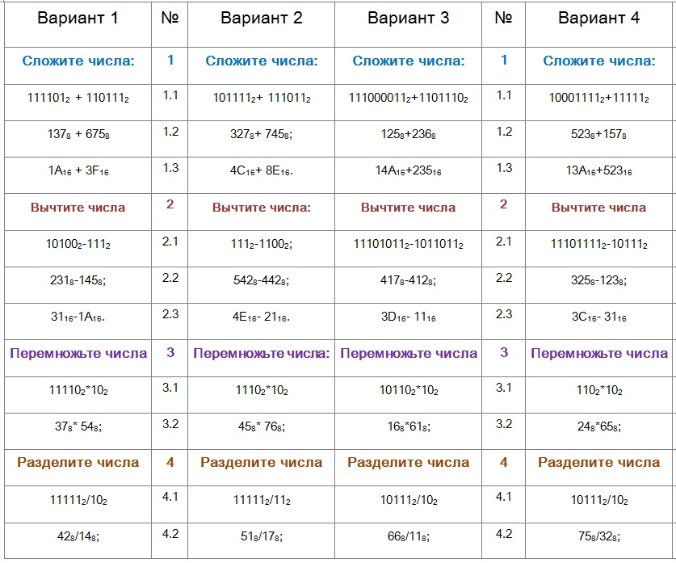
  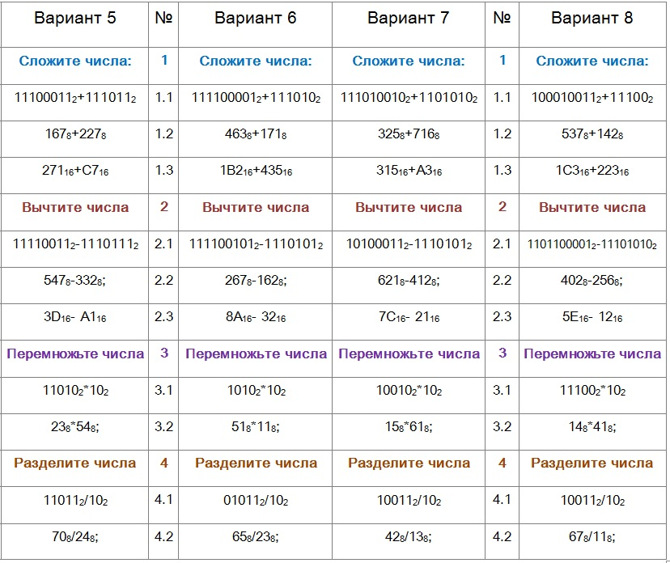
 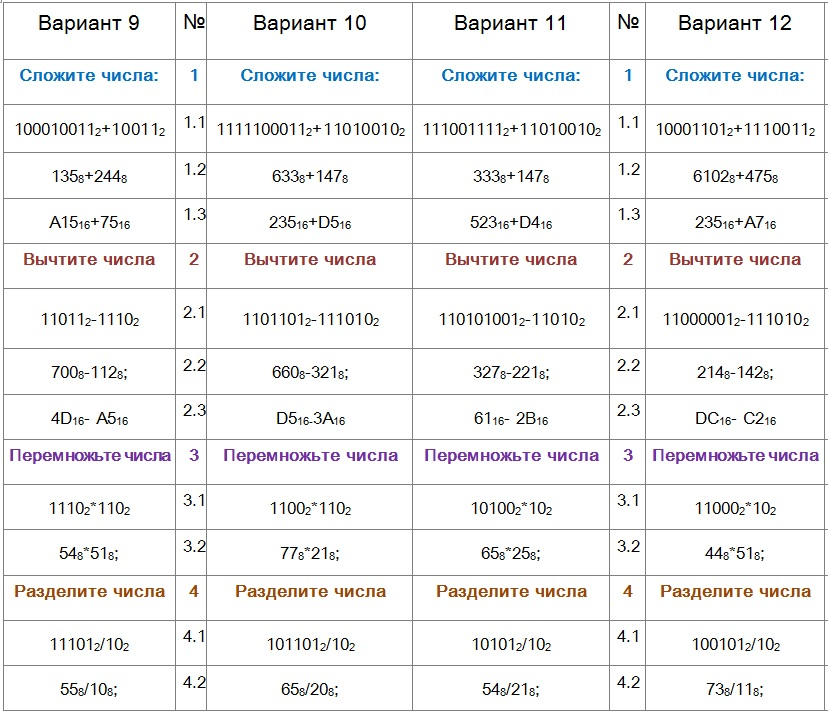
 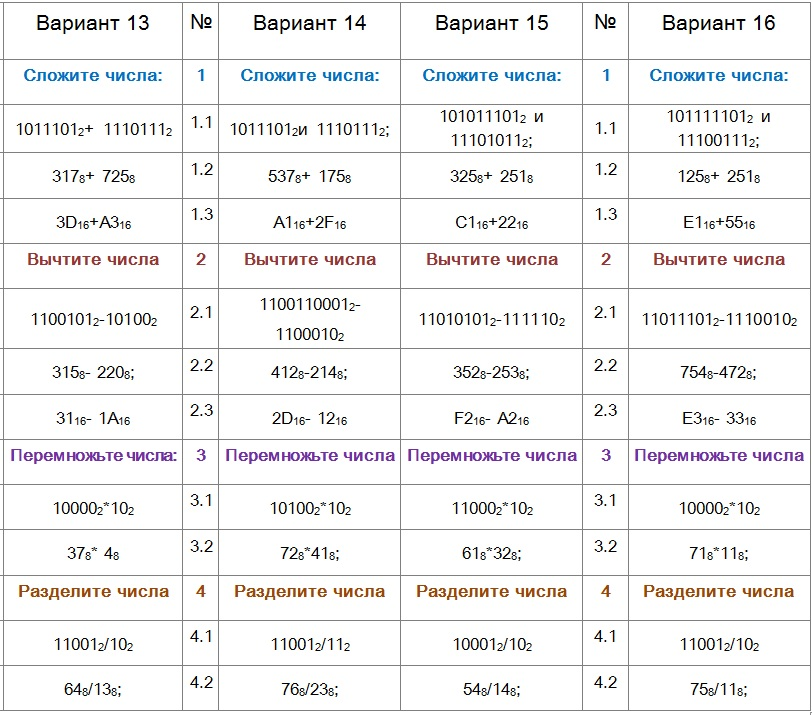
  
 
 
  
  
  
  <p style="text-align: left;"><b><span style="font-family: Arial,sans-serif; color: black;"><span style="font-size: 18px;">Для выполнения задния, вам
надо ознакомится с правилами </span></span></b></p>


  
  
  <script language="JavaScript">
<!--
//document.write("Вы используете " + navigator.appName + " " + navigator.appVersion);
//if(navigator.appName=='Microsoft Internet Explorer') document.write("<link rel='stylesheet' href='{$cfg.path.css}ie.css' type='text/css'>");
//if(navigator.appName=='Netscape') document.write("<link rel='stylesheet' href='{$cfg.path.css}mozilla.css' type='text/css'>"); document.write("<link rel='stylesheet' href='{$cfg.path.css}mozilla.css' type='text/css'>"); //if(navigator.appName=='Opera') document.write("<link rel='stylesheet' href='{$cfg.path.css}opera.css' type='text/css'>"); document.write("<link rel='stylesheet' href='{$cfg.path.css}mozilla.css' type='text/css'>"); -->
  </script>
  
  <script type="text/javascript">
<!--
function setMenuforIE6(ElID)
{
jsHover = function() {
var hEls = document.getElementById(ElID).getElementsByTagName("LI");
for (var i=0, len=hEls.length; i<len; i++) {
hEls[i].onmouseover=function() { this.className+=" jshover"; }
hEls[i].onmouseout=function() { this.className=this.className.replace(" jshover", ""); }
}
}
if (window.attachEvent && navigator.userAgent.indexOf("Opera")==-1) window.attachEvent("onload", jsHover);
}
setMenuforIE6("menu2");
setMenuforIE6("menu3");
setMenuforIE6("menu8");
setMenuforIE6("menu9");
setMenuforIE6("menu10");
setMenuforIE6("menu11");
setMenuforIE6("menu12");
setMenuforIE6("menu13");
//setMenuforIE6("menu16");
//setMenuforIE6("menu17");
jsHover = function() {
var hEls = document.getElementById("sub_sub");
for (var i=0, len=hEls.length; i<len; i++) {
hEls[i].onmouseover=function() { this.className+=" jshover"; }
hEls[i].onmouseout=function() { this.className=this.className.replace(" jshover", ""); }
}
}
if (window.attachEvent && navigator.userAgent.indexOf("Opera")==-1) window.attachEvent("onload", jsHover);
-->
  </script><noindex></noindex>
  
  <div align="center">
  
  <h2><span style="color: rgb(255, 0, 0);">Арифметических операций в позиционных системах счисления</span></h2>

  <br>


  
  
  <p align="justify"><span style="font-family: Arial,sans-serif; font-size: 15px;"><span style="color: rgb(0, 0, 0);"> Рассмотрим основные арифметические операции: сложение, вычитание, умножение
и деление. Правила выполнения этих операций в десятичной системе хорошо
известны это сложение, вычитание, умножение столбиком и деление углом. Эти правила применимы и ко всем другим
позиционным системам счисления. Только таблицами сложения и умножения надо пользоваться особыми для каждой системы.</span></span></p>

  
  <center>
  
  <div style="text-align: center;">
  </div>

   
  <p></p>

   
  <h3 style="text-align: center;"><font color="#3333ff">Сложение</font></h3>

  </center>


  
  <p align="center"><span style="font-family: Arial,sans-serif; font-size: 15px;"><span style="color: rgb(0, 0, 0);">Таблицы сложения легко составить, используя Правило Счета.</span></span></p>
  <span></span>

  
  <p></p>

  
  
  <p>
  
  <table border="0" width="94%">


    <tbody>


      <tr>


        <td style="border-width: 0px;" ="" color="" rgb(0="" 0="" text-align="" center="" valign="top" width="50%"><big><big>Сложение
в двоичной системе
        </big></big>
        
        <p style="width: 148px;">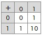</p>

        <big><big>
        </big></big></td>


        <td style="border-width: 0px;" ="" 332px="" width="">
        
        <div style="text-align: center;"><big><big><span style="color: rgb(0, 0, 0);">Сложение в
восьмеричной системе</span></big></big></div>


        
        <p style="text-align: center; margin-left: 0px; width: 304px;">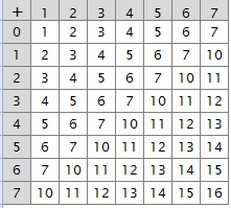</p>


        </td>


        <td style="border-width: 0px;" ="" 332px="" align="undefined" valign="undefined" width=""><span style="text-align: justify;"><span style="font-family: Arial,sans-serif; color: black;"><span style="font-size: 18px;">Сложение в
шестнадцатиричной системе</span></span></span><br>


        <span style="text-align: justify;"><b><span style="font-family: Arial,sans-serif; color: black;"><span style="font-size: 18px;">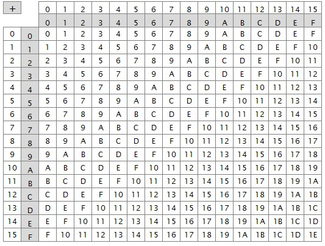</span></span></b></span></td>


      </tr>


    
    </tbody>
  
  </table>


  <b><br>


  </b> </p>


  
  <p><br>


  </p>

  
  <p align="justify"><span style="font-family: Arial,sans-serif; font-size: 15px;"><span style="color: rgb(0, 0, 0);">При сложении цифры суммируются по
разрядам, и если при этом возникает избыток, то он переносится влево. <br>


  <font style="font-weight: normal;" color="#ff0000">
Пример 1. </font>Сложим числа 15 и 6 в различных системах счисления. </span></span></p>

  
  <p></p>


  
  <p></p>

  
  <div style="text-align: left;">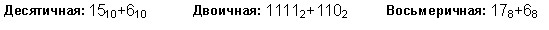 <br>

  </div>

  
  <p>

  
  <table border="0" width="94%">


    <tbody>


      <tr>


        <td style="border-width: 0px;" valign="top" width="50%"><sub style="color: rgb(0, 0, 0);"><br>


        </sub>
        
        <p> <span style="text-align: justify;"><b><span style="font-family: Arial,sans-serif; color: black;"><span style="font-size: 18px;">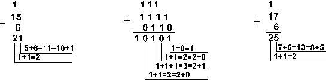</span></span></b></span></p>


        </td>


        <td style="border-width: 0px;" valign="top" width="50%"><span style="text-align: justify;"><b><span style="font-family: Arial,sans-serif; color: black;"><span style="font-size: 18px;"><span style="text-align: justify; color: rgb(0, 0, 0);"><b><span style="font-family: Arial,sans-serif;"><span style="font-size: 18px;">
        
        <p><span style="text-align: justify;"><b><span style="font-family: Arial,sans-serif; color: black;"><span style="font-size: 18px;"><b style="color: rgb(0, 0, 0);">Шестнадцатеричная:</b><span style="color: rgb(0, 0, 0);">
F</span><sub style="color: rgb(0, 0, 0);">16</sub><span style="color: rgb(0, 0, 0);">+6</span><sub style="color: rgb(0, 0, 0);">16</sub></span></span></b></span>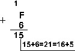 </p>


        </span></span></b></span></span></span></b></span><b style="color: rgb(0, 0, 0);">Ответ:</b><span style="color: rgb(0, 0, 0);">
15+6 = 21</span><sub style="color: rgb(0, 0, 0);">10</sub><span style="color: rgb(0, 0, 0);"> = 10101</span><sub style="color: rgb(0, 0, 0);">2</sub><span style="color: rgb(0, 0, 0);"> = 25</span><sub style="color: rgb(0, 0, 0);">8</sub><span style="color: rgb(0, 0, 0);">
= 15</span><sub style="color: rgb(0, 0, 0);">16</sub><span style="color: rgb(0, 0, 0);">.  </span><br style="color: rgb(0, 0, 0);">


        <b style="color: rgb(0, 0, 0);">Проверка.</b><span style="color: rgb(0, 0, 0);"> Преобразуем полученные суммы к
десятичному виду: </span><br style="color: rgb(0, 0, 0);">


        <span style="color: rgb(0, 0, 0);">10101</span><sub style="color: rgb(0, 0, 0);">2</sub><span style="color: rgb(0, 0, 0);"> = 2</span><sup style="color: rgb(0, 0, 0);">4</sup><span style="color: rgb(0, 0, 0);"> + 2</span><sup style="color: rgb(0, 0, 0);">2</sup><span style="color: rgb(0, 0, 0);">
+ 2</span><sup style="color: rgb(0, 0, 0);">0</sup><span style="color: rgb(0, 0, 0);"> =
16+4+1=21,  </span><br style="color: rgb(0, 0, 0);">


        <span style="color: rgb(0, 0, 0);">25</span><sub style="color: rgb(0, 0, 0);">8</sub><span style="color: rgb(0, 0, 0);"> = 2</span><sup style="color: rgb(0, 0, 0);"> <b>.</b> </sup><span style="color: rgb(0, 0, 0);">8</span><sup style="color: rgb(0, 0, 0);">1</sup><span style="color: rgb(0, 0, 0);">
+ 5</span><sup style="color: rgb(0, 0, 0);"> <b>.</b>
        </sup><span style="color: rgb(0, 0, 0);">8</span><sup style="color: rgb(0, 0, 0);">0</sup><span style="color: rgb(0, 0, 0);">
= 16 + 5 = 21,  </span><br style="color: rgb(0, 0, 0);">


        <span style="color: rgb(0, 0, 0);">15</span><sub style="color: rgb(0, 0, 0);">16</sub><span style="color: rgb(0, 0, 0);"> = 1</span><sup style="color: rgb(0, 0, 0);"> <b>.</b> </sup><span style="color: rgb(0, 0, 0);">1</span><span style="text-align: justify; color: rgb(0, 0, 0);"><b><span style="font-family: Arial,sans-serif;"><span style="font-size: 18px;">
        
        <p> </p>


        </span></span></b></span>6<sub>1</sub>
+ 5<sup> <b>.</b> </sup>16<sub>0</sub>
= 16+5 = 21. </td>


      </tr>


    
    </tbody>
  
  </table>


  <br>

  </p>

  
  <div style="text-align: left; color: rgb(0, 0, 0); font-size: 15px;">

  <font style="font-weight: normal;" color="#ff0000">Пример 2.</font>
Сложим числа 15, 7 и 3. </div>

  
  <p></p>

  
  
  <p style="text-align: left;">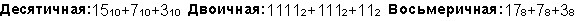 </p>

 
  
  <p style="text-align: left;">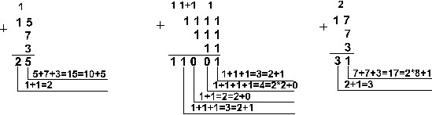
  
  <table style="border-width: 0px;" ="" 503px="" text-align="" left="" margin-left="" 0px="" margin-right="" auto="" border="0" width="">


    <tbody>


      <tr>


        <td style="border-width: 0px;" ="" 183px="" valign="top" width=""><b style="color: rgb(0, 0, 0);">Шестнадцатеричная:</b><span style="color: rgb(0, 0, 0);">
F</span><sub style="color: rgb(0, 0, 0);">16</sub><span style="color: rgb(0, 0, 0);">+7</span><sub style="color: rgb(0, 0, 0);">16</sub><span style="color: rgb(0, 0, 0);">+3</span><sub style="color: rgb(0, 0, 0);">16</sub>
        
        <p style="border-width: 0px;" ="" width="" 216px="">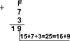 </p>


        </td>


        <td style="border-width: 0px;" ="" 307px="" valign="top" width=""><b style="color: rgb(0, 0, 0);">Ответ:</b><span style="color: rgb(0, 0, 0);">
5+</span><span style="text-align: justify; color: rgb(0, 0, 0);"><b><span style="font-family: Arial,sans-serif;"><span style="font-size: 18px;"></span></span></b></span><span style="color: rgb(0, 0, 0);">+3 = 25</span><sub style="color: rgb(0, 0, 0);">10</sub><span style="color: rgb(0, 0, 0);"> = 11001</span><sub style="color: rgb(0, 0, 0);">2</sub><span style="color: rgb(0, 0, 0);">
= 31</span><sub style="color: rgb(0, 0, 0);">8</sub><span style="color: rgb(0, 0, 0);"> = 19</span><sub style="color: rgb(0, 0, 0);">16</sub><span style="color: rgb(0, 0, 0);">.  </span><br style="color: rgb(0, 0, 0);">


        <b style="color: rgb(0, 0, 0);">Проверка:</b><span style="color: rgb(0, 0, 0);"> </span><br style="color: rgb(0, 0, 0);">


        <span style="color: rgb(0, 0, 0);">11001</span><sub style="color: rgb(0, 0, 0);">2</sub><span style="color: rgb(0, 0, 0);"> = 2</span><sup style="color: rgb(0, 0, 0);">4</sup><span style="color: rgb(0, 0, 0);"> + 2</span><sup style="color: rgb(0, 0, 0);">3</sup><span style="color: rgb(0, 0, 0);">
+ 2</span><sup style="color: rgb(0, 0, 0);">0</sup><span style="color: rgb(0, 0, 0);"> =
16+8+1=25, </span><br style="color: rgb(0, 0, 0);">


        <span style="color: rgb(0, 0, 0);">31</span><sub style="color: rgb(0, 0, 0);">8</sub><span style="color: rgb(0, 0, 0);"> = 3</span><sup style="color: rgb(0, 0, 0);"> <b>.</b> </sup><span style="color: rgb(0, 0, 0);">8</span><sup style="color: rgb(0, 0, 0);">1</sup><span style="color: rgb(0, 0, 0);">
+ 1</span><sup style="color: rgb(0, 0, 0);"> <b>.</b>
        </sup><span style="color: rgb(0, 0, 0);">8</span><sup style="color: rgb(0, 0, 0);">0</sup><span style="color: rgb(0, 0, 0);">
= 24 + 1 = 25,  </span><br style="color: rgb(0, 0, 0);">


        <span style="color: rgb(0, 0, 0);">19</span><sub style="color: rgb(0, 0, 0);">16</sub><span style="color: rgb(0, 0, 0);"> = 1</span><sup style="color: rgb(0, 0, 0);"> <b>.</b> </sup><span style="color: rgb(0, 0, 0);">16</span><sup style="color: rgb(0, 0, 0);">1</sup><span style="color: rgb(0, 0, 0);">
+ 9</span><sup style="color: rgb(0, 0, 0);"> <b>.</b>
        </sup><span style="color: rgb(0, 0, 0);">16</span><sup style="color: rgb(0, 0, 0);">0</sup><span style="color: rgb(0, 0, 0);">
= 16+9 = 25. </span> </td>


      </tr>


    
    </tbody>
  
  </table>


  <br>


   </p>
  <div style="text-align: left; color: rgb(0, 0, 0); font-size: 15px;">

  <font style="font-weight: normal;" color="#ff0000">Пример 3.</font>
Сложим числа 141,5 и 59,75. 
  <p></p>

  </div>

  
  <p style="text-align: left;">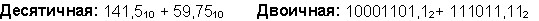 </p>

 
  
  <p style="text-align: left;">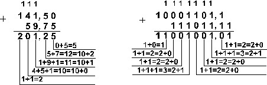 </p>

  
  
  <p style="text-align: left;">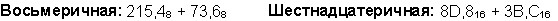 </p>

 
  
  <p style="text-align: left;">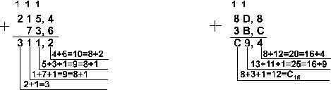 <br>


  <br>


Ответ:<span style="font-weight: normal; color: black;"> 141,5 + 59,75 = 201,25</span><sub style="font-weight: normal; color: black;">10</sub><span style="font-weight: normal; color: black;">
= 11001001,01</span><sub style="font-weight: normal; color: black;">2</sub><span style="font-weight: normal; color: black;">
= 311,2</span><sub style="font-weight: normal; color: black;">8</sub><span style="font-weight: normal; color: black;"> = C9,4</span><sub style="font-weight: normal; color: black;">16</sub><span style="font-weight: normal; color: black;"> </span><br style="font-weight: normal; color: black;">


Проверка.<span style="font-weight: normal; color: black;"> Преобразуем полученные суммы к
десятичному виду: </span><br style="font-weight: normal; color: black;">

  <span style="font-weight: normal; color: black;">
11001001,01</span><sub style="font-weight: normal; color: black;">2</sub><span style="font-weight: normal; color: black;"> = 2</span><sup style="font-weight: normal; color: black;">7</sup><span style="font-weight: normal; color: black;"> + 2</span><sup style="font-weight: normal; color: black;">6</sup><span style="font-weight: normal; color: black;">
+ 2</span><sup style="font-weight: normal; color: black;">3</sup><span style="font-weight: normal; color: black;">
+ 2</span><sup style="font-weight: normal; color: black;">0</sup><span style="font-weight: normal; color: black;"> + 2</span><sup style="font-weight: normal; color: black;">-2</sup><span style="font-weight: normal; color: black;"> = 201,25 </span><br style="font-weight: normal; color: black;">

  <span style="font-weight: normal; color: black;">
311,2</span><sub style="font-weight: normal; color: black;">8</sub><span style="font-weight: normal; color: black;"> = 3</span><sup style="font-weight: normal; color: black;"> . </sup><span style="font-weight: normal; color: black;">8</span><sup style="font-weight: normal; color: black;">2</sup><span style="font-weight: normal; color: black;">
+ 18</span><sup style="font-weight: normal; color: black;">1</sup><span style="font-weight: normal; color: black;"> + 1</span><sup style="font-weight: normal; color: black;"> . </sup><span style="font-weight: normal; color: black;">8</span><sup style="font-weight: normal; color: black;">0</sup><span style="font-weight: normal; color: black;">
+ 2</span><sup style="font-weight: normal; color: black;"> . </sup><span style="font-weight: normal; color: black;">8</span><sup style="font-weight: normal; color: black;">-1</sup><span style="font-weight: normal; color: black;">
= 201,25 </span><br style="font-weight: normal; color: black;">

  <span style="font-weight: normal; color: black;">
C9,4</span><sub style="font-weight: normal; color: black;">16</sub><span style="font-weight: normal; color: black;"> = 12</span><sup style="font-weight: normal; color: black;"> . </sup><span style="font-weight: normal; color: black;">16</span><sup style="font-weight: normal; color: black;">1</sup><span style="font-weight: normal; color: black;">
+ 9</span><sup style="font-weight: normal; color: black;"> . </sup><span style="font-weight: normal; color: black;">16</span><sup style="font-weight: normal; color: black;">0</sup><span style="font-weight: normal; color: black;">
+ 4</span><sup style="font-weight: normal; color: black;"> . </sup><span style="font-weight: normal; color: black;">16</span><sup style="font-weight: normal; color: black;">-1</sup><span style="font-weight: normal; color: black;">
= 201,25 </span></p>

  
  <div style="text-align: left;">
  <center>
  
  <h3 style="text-align: center;"><font color="#3333ff">Вычитание</font></h3>
   </center>

  
  
  
  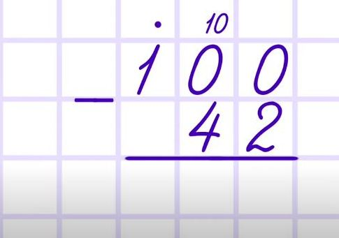
  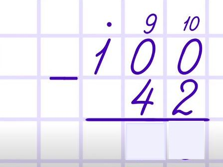
  
  
 
  <div style="text-align: left; color: rgb(0, 0, 0); font-size: 15px;">

  <font style="font-weight: normal;" color="#ff0000">Пример 4.</font>

  Вычтем
единицу из чисел 10<sub style="font-weight: normal; color: black;">2</sub><span style="font-weight: normal; color: black;">,
10</span><sub style="font-weight: normal; color: black;">8</sub><span style="font-weight: normal; color: black;"> и 10</span><sub style="font-weight: normal; color: black;">16</sub><span style="font-weight: normal; color: black;"> </span><br style="font-weight: normal; color: black;">


  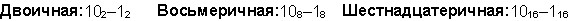<span style="font-weight: normal; color: black;"> </span><br style="font-weight: normal; color: black;">


  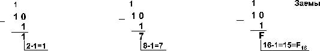<span style="font-weight: normal; color: black;"> </span><br style="font-weight: normal; color: black;">

  
 
 <font style="font-weight: normal;" color="#ff0000">Пример 5.</font><span style="font-weight: normal; color: black;">
Вычтем единицу из чисел
100</span><sub style="font-weight: normal; color: black;">2</sub><span style="font-weight: normal; color: black;">, 100</span><sub style="font-weight: normal; color: black;">8</sub><span style="font-weight: normal; color: black;"> и 100</span><sub style="font-weight: normal; color: black;">16</sub>
  <br>

  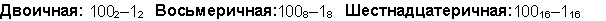<span style="font-weight: normal; color: black;"> </span><br style="font-weight: normal; color: black;">

 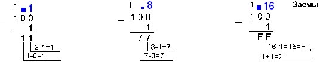<span style="font-weight: normal; color: black;"> </span><br style="font-weight: normal; color: black;">


  <font style="font-weight: normal;" color="#ff0000">Пример 6. </font><span style="font-weight: normal; color: black;">Вычтем число 59,75 из числа 201,25.
  </span></div>

  
  <p style="text-align: left; font-weight: normal;"> 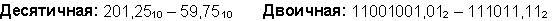 </p>

  
  
  <p style="text-align: left; font-weight: normal;"> 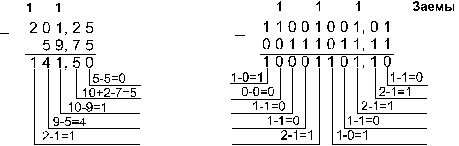 </p>


  
  <p style="text-align: left; font-weight: normal;"> 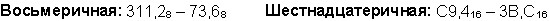 </p>

  
  
  <p style="text-align: left; font-weight: normal;"> 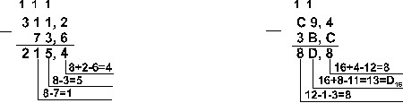 <br>


  <br>

  <span style="font-weight: normal; color: black;">
Ответ: 201,25<sub>10</sub> - 59,75<sub>10</sub> = 141,5<sub>10</sub> = 10001101,1<sub>2</sub> = 215,4<sub>8</sub> = 8D,8<sub>16</sub>. <br>


Проверка. Преобразуем полученные разности к десятичному виду: <br>


10001101,1<sub>2</sub> = 2<sup>7</sup> + 2<sup>3</sup>
+ 2<sup>2</sup>
+ 2<sup>0</sup> + 2<sup>-1</sup> = 141,5; <br>


215,4<sub>8</sub> = 2<sup> . </sup>8<sup>2</sup>
+ 1<sup> . </sup>8<sup>1</sup>
+ 5<sup> . </sup>8<sup>0</sup>
+ 4<sup> . </sup>8<sup>-1</sup>
= 141,5; <br>


8D,8<sub>16</sub> = 8<sup> . </sup>16<sup>1</sup>
+ D<sup> . </sup>16<sup>0</sup>
+ 8<sup> . </sup>16<sup>-1</sup>
= 141,5. </span></p>

 

 
  <p></p>

  </div>

 
  <div style="text-align: left;">
   
 
  
  <h3 style="text-align: center;"><font color="#3333ff">Умножение</font></h3>


 

  </div>

  
  <p></p>

 
  
  <div style="text-align: justify; color: black;">
  
  <span style="font-weight: normal; color: black;">Выполняя
умножение многозначных чисел в различных
позиционных системах счисления, можно использовать обычный алгоритм
перемножения чисел в столбик, но при этом результаты перемножения и
сложения однозначных чисел необходимо
заимствовать из соответствующих рассматриваемой системе таблиц
умножения и сложения.</span></div>


  
  <p>
  
  <table border="0" width="94%">


    <tbody>


      <tr>


        <td style="border-width: 0px;" ="" text-align="" center="" valign="top" width="50%"><b>Таблица умножения в двоичной системе</b>
        
        <p style="text-align: center; color: black;">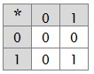</p>


        </td>


        <td style="border-width: 0px;">
        
        <div style="text-align: center;"><b>Таблица умножения в восьмеричной системе</b>
        </div>

        
        <p style="text-align: left; color: black;">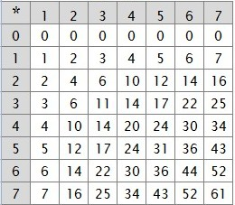</p>


        </td>

 <td style="border-width: 0px;" ="" text-align="" center="" valign="top" width="50%"><b>Таблица умножения в шестнадцатиричной системе</b>
        
        <p style="text-align: center; color: black;">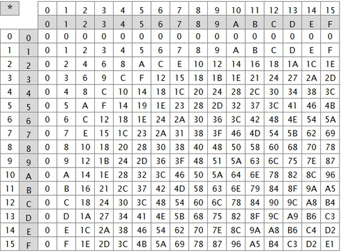</p>


        </td>

      </tr>


    
    </tbody>
  
  </table>

  </p>

    
  <div style="text-align: left; color: rgb(0, 0, 0); font-size: 15px;">

 
  <p> Ввиду чрезвычайной простоты таблицы умножения в двоичной системе, умножение сводится лишь к сдвигам множимого и сложениям. <br>

 </p>


  <font style="font-weight: normal;" color="#ff0000"> Пример 7.</font> Перемножим числа 5 и 6.
  
  <p style="font-weight: normal; color: black;"></p>

 
  
  <p>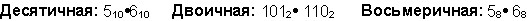 </p>

 
  
  <p>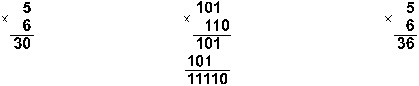 <br>


Ответ: 5<sup> . </sup>6 = 30<sub>10</sub> = 11110<sub>2</sub> = 36<sub>8</sub>.
  <br>


Проверка. Преобразуем полученные произведения к
десятичному виду: <br>


11110<sub>2</sub> = 2<sup>4</sup> + 2<sup>3</sup>+ 2<sup>2</sup> + 2<sup>1</sup> = 30; <br>


36<sub>8</sub> = 38<sup>1</sup> + 68<sup>0</sup>= 30. <br>


  <br>

 </p>
  </div>

 
  <div style="text-align: left; color: rgb(0, 0, 0); font-size: 15px;">
  <font color="#ff0000">Пример 8.</font> Перемножим числа 115 и 51. 
  <p></p>


  
  <p>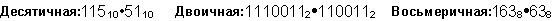 </p>


  
  <p>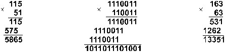 <br>


Ответ: 115<sup> . </sup>51
= 5865<sub>10</sub> = 1011011101001<sub>2</sub>
= 13351<sub>8</sub>. <br>


Проверка. Преобразуем полученные произведения к
десятичному виду: <br>


1011011101001<sub>2</sub> = 2<sup>12</sup> + 2<sup>10</sup>
+ 2<sup>9</sup>
+ 2<sup>7</sup> + 2<sup>6</sup> + 2<sup>5</sup>
+ 2<sup>3</sup> + 2<sup>0</sup>
= 5865; <br>


13351<sub>8</sub> = 1<sup> . </sup>8<sup>4</sup>
+ 3<sup> . </sup>8<sup>3</sup>
+ 3<sup> . </sup>8<sup>2</sup>
+ 5<sup> . </sup>8<sup>1</sup>
+ 1<sup> . </sup>8<sup>0</sup>
= 5865. </p>


   </div>

 
  <p style="text-align: left; font-weight: normal; color: black;">
   <br>

 <font color="#ff0000">Пример 9.</font> Перемножим шестнадцатеричные числа A1<sub>16</sub> &bull; 1C<sub>16</sub> и 1,F<sub>16</sub> &bull; 3,A<sub>16</sub> 
 </p>

  
  <p style="text-align: left; font-weight: normal; color: black;">
Выполнение арифметических операций в шестнадцатеричной системе
производится как и в десятиричной системе, но при выполнении
арифметических операций над большими числами необходимо использовать
таблицы сложения и умножения чисел в шестнадцатеричной системе
счисления. </p>

   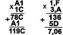 
 

 
  <h3 style="text-align: center;"><font color="#3333ff">Деление</font></h3>


  
  
  <div style="text-align: left; font-weight: normal; color: black;">Деление
в любой позиционной системе счисления производится по тем же правилам,
как и деление углом в десятичной системе. В двоичной системе деление
выполняется особенно просто, ведь очередная цифра частного может быть
только нулем
или единицей. <br>
 


 <br>


  <font color="#ff0000">Пример 10.</font>
Разделим число 30 на число 6.
  </div>

  
  <p style="text-align: left; font-weight: normal;">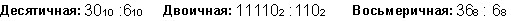 </p>

  
  <div style="text-align: left; font-weight: normal;">
  </div>

  
  <p style="text-align: left; font-weight: normal; color: black;">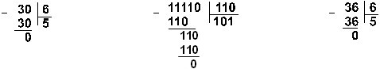 <br>


Ответ: 30 : 6 = 5<sub>10</sub> = 101<sub>2</sub>
= 5<sub>8</sub>. <br>


 <br>


  <font color="#ff0000">Пример 11.</font>
Разделим число 5865 на
число 115. </p>

  
  <div style="text-align: left; font-weight: normal;">
  </div>

  
  <p style="text-align: left; font-weight: normal;">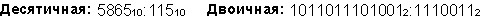 </p>

  
  <div style="text-align: left; font-weight: normal;">
  </div>

  
  <p style="text-align: left; font-weight: normal;">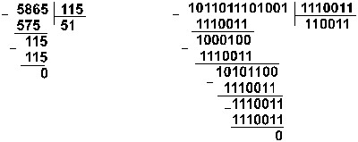 </p>

  
  <div style="text-align: left; font-weight: normal;">
  </div>

  
  <p style="text-align: left; font-weight: normal; color: black;">Восьмеричная: 13351<sub>8</sub>
:163<sub>8</sub> </p>

 
  
  <p style="text-align: left; font-weight: normal; color: black;">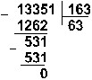 <br>


Ответ: 5865 : 115 = 51<sub>10</sub> =
110011<sub>2</sub> = 63<sub>8</sub>. <br>


Проверка. Преобразуем полученные частные к десятичному виду: <br>


110011<sub>2</sub> = 2<sup>5</sup> + 2<sup>4</sup>
+ 2<sup>1</sup>
+ 2<sup>0</sup> = 51; 63<sub>8</sub> = 6<sup>
. </sup>8<sup>1</sup> + 3<sup>
. </sup>8<sup>0</sup>
= 51. <br>


 <br>


 <font color="#ff0000">Пример 12.</font> Разделим число 35 на число 14. </p>

  
  <div style="text-align: left; font-weight: normal;">
  </div>

  
  <p style="text-align: left; font-weight: normal;">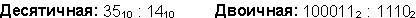 </p>

  
  <div style="text-align: left; font-weight: normal;">
  </div>

  
  <p style="text-align: left; font-weight: normal;">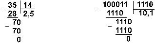 </p>

  
  <div style="text-align: left; font-weight: normal;">
  </div>

  
  <p style="text-align: left; font-weight: normal;">Восьмеричная: 43<sub>8</sub>
: 16<sub>8</sub> </p>

  
  <div style="text-align: left; color: rgb(0, 0, 0); font-size: 15px;">
  
  
  <p style="text-align: left; font-weight: normal;">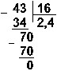 <br>


Ответ: 35 : 14 = 2,5<sub>10</sub> = 10,1<sub>2</sub> = 2,4<sub>8</sub>. <br>


Проверка. Преобразуем полученные частные к десятичному виду: <br>


10,1<sub>2</sub> = 2<sup>1</sup> + 2 <sup>-1</sup> = 2,5; <br>


2,4<sub>8</sub> = 2<sup> . </sup>8<sup>0</sup>
+ 4<sup> . </sup>8<sup>-1</sup>
= 2,5.</p>


  

  <b><font face="Trebuchet MS" size="2"><font face="Trebuchet MS" size="2"><font style="color: rgb(0, 0, 0);" face="Trebuchet MS" size="2"><big><big><span style="color: rgb(255, 0, 0);"></span></big></big></font></font></font></b></div>


  
  <p></p>


  </div>
</ul>


</div>


<b> <font style="color: rgb(0, 0, 0);" face="Trebuchet MS" size="2"><big><span style="color: rgb(255, 0, 0);"></span></big></font>
<span style="background-color: rgb(255, 255, 255);"><br>


</span></b></div>


</div>


<b> </b></div>


</div>


</div>


</div>


</div>


</div>


</div>


</div>


</div>


</div>


<div class="art-footer">
<div class="art-footer-body">
<div class="art-footer-center">
<div class="art-footer-wrapper">
<div class="art-footer-text">
<p><b><a href="#">В начало</a></b></p>


<p><span style="color: rgb(11, 36, 50); font-family: Arial,Helvetica,sans-serif;">
<b>Гордеева Е.А.</b></span></p>


<p><span style="color: rgb(11, 36, 50); font-family: Arial,Helvetica,sans-serif;"><b>2019</b></span></p>


<div class="cleared"></div>


<p class="art-page-footer"></p>


</div>


</div>


</div>


<div class="cleared"></div>


</div>


</div>


<div class="cleared"></div>


<div style="height: 30px;"></div>

<div id="topNubex"></div>


</div>
</body>
</html>
